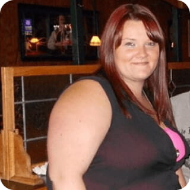

Camelia Iordache: Mă jenam să mă dezbrac în fața soțului. Sexul devenise o tortură. Istoria mea despre cum am reușit să slăbesc.


Până nu demult eram foarte grasă și îmi uram corpul. Am încercat să slăbesc cu ajutorul dietelor, am făcut sport, am băut pastile și ceaiuri, dar toate fără rost.
Înainte, greutatea nu mă speria și nu-mi producea disconfort. Dar după naștere am adăugat 15 kg în plus. Pur și simplu mă uram pentru asta. N-aveam chef să-mi privesc imaginea în oglindă. Grăsimea de pe talie, pliurile de grăsime de pe spate. Nu reușeam să-mi aleg haine: pantalonii se aranjau bine la coapse, pe când la talie nu mă ajungeau.

Cu vremea, a devenit și mai rău. Soțul mă ademenea mereu în pat. Ca să nu-și găsească vreo amantă, eram nevoită să-mi înfrâng ura față de propriul corp. Într-un final, devenise incomod și neplăcut să fac sex în unele poziții. Cel mai tare mă înfuria poziția misionarului: la fiecare mișcare se auzea sunetul neplăcut produs de burtoiul meu care se atingea de corpul soțului. El se amuza. Odată chiar în timpul sexului am izbucnit în lacrimi, pentru că începuse să-mi strângă coapsele grase.
Însă cu totul altă întâmplare m-a determinat să slăbesc. Prietena mi-a arătat niște poze de la o petrecere. Și atunci am decis că s-a terminat!
Primul lucru pe care l-am încercat au fost dietele. Am exclus aproape totul, dar ciocolata și dulciurile mă ademeneau peste măsură. Bineînțeles că n-am rezistat și a urmat o săptămână plină de îndopare. La sfârșitul ei, cântarul mi-a arătat +4 kg. Catastrofă! Realizând că dietele nu mi se potrivesc, am început să calculez caloriile și să reduc meniul. Peste 2 săptămâni însă n-am mai rezistat și cele 3 kg eliminate cu atâta dificultate au revenit la loc.
La sală n-aveam timp să merg. Astfel am început să iau pastile și ceaiuri care îmi provocau indigestie și dureri la stomac. Eram disperată și am decis să fac liposucție, dar doctorul a numit un preț exagerat. Mă întorceam acasă deprimată și nu vedeam nimic în jur. Așa am întâlnit-o pe Mădălina, o fostă vecină. Aceasta avuse greutate excesivă toată viața, dar acum arăta ca un model: talie subțire, coapse înguste și siluetă tonifiată.
Eram cu nervii la pământ, așa că după câteva fraze de politețe, am izbucnit în plâns chiar în mijlocul străzii. Mădălina m-a așezat pe cea mai apropiată bancă și m-a întrebat ce se întâmplase cu mine. Aflând despre motivul lacrimilor mele, mi-a povestit istoria sa.
— Îți amintești cât eram de grasă? Vroiam și eu să-mi fac liposucție, dar m-a salvat vara mea. Mi-a povestit despre băutură și mi-a oferit link-ul site-ului de unde pot să le cumpăr.
Mădălina mi-a trimis pe telefon denumirea produsului și link-ul de pe care a comandat băutură și s-a făcut nevăzută. Eram atât de nerăbdătoare, încât am trecut imediat pe site. Deși am auzit că Demi Moore, Katy Perry, J-Lo și multe alte vedete au slăbit cu această băutură, eram sceptică. Dar încercasem deja totul și eram disperată. Nu aveam de ales! Am citit recenziile și erau cu adevărat impresionante! Am găsit o mulțime de păreri pozitive, pe site era o reducere de 50%, așa că am comandat 2 cutii.
Peste câteva zile, țineam în mâini coletul mult așteptat. Astfel am pășit pe calea spre silueta mea perfectă. Dimineața și seara, luam câte un pahar de . Peste câteva zile s-a îmbunătățit digestia și arsura la stomac a dispărut. Peste 7 zile, cântarul mi-a arătat minus 5 kg!
Soțul devenise mai activ în pat, mă atingea mereu și începuse să-mi spună complimente. Peste 2 săptămâni am mai slăbit 4 kg și atunci m-a dus la magazin să-mi ia haine noi, cele vechi deveniseră dezastruos de mari.

Peste câteva zile, a plecat într-o călătorie de afaceri pe o perioadă de 2 săptămâni. În tot acest timp, am continuat să beau băutură . La întoarcerea lui, am decis să-i fac o surpriză și mi-am cumpărat lenjerie sexy.
Intrând în casă, a rămas fără cuvinte. Bineînțeles, îl întâmpinam în noua mea lenjerie din dantelă. După o lungă perioadă, mă simțeam în sfârșit atrăgătoare, sexy și dorită.
Greutatea mea se menține deja de 3 luni la cifra obținută. Eu și soțul suntem în a doua lună de miere, care se pare că nu sfârșește. Aceasta este mica mea victorie! Știu cât de multe femei suferă din cauza excesului de greutate și aș dori să le vin în ajutor. Plasez link-ul site-ului producătorului. Doar acolo puteți cumpăra băutură originale . Atenție, nu cumpărați băutură pe alte site-uri, aveți grijă de sănătatea voastră.
Incredibil, există perverși cărora le plac pliurile de slănină de pe spate... Dacă aș fi fost în locul acestui bărbat, nu mi s-ar fi sculat.
Wow! Ești bravo! Ai reușit să slăbești. M-ai inspirat, am comandat și eu , ard de nerăbdare să încep cursul.
Am auzit deja despre această băutură, dar nu credeam că sunt atât de eficiente. Super rezultat!
efectul e pur și simplu WOW!!!
Cu ajutorul am reușit să slăbesc 14 kg, a plecat tot excesul de greutate și mă simt minunat. Priviți foto.
Sabina, impresionant! Vreau să-ți spun că arătai foarte bine și înainte de a slăbi.
Ai avut marele noroc să o întâlnești la timp pe Mădălina... Eu am făcut liposucție, am avut o mulțime de complicații după și peste un an kilogramele au revenit. Acum voi folosi doar , am comandat deja.
Ce noroc că nu e necesar să slăbesc. Sora mea a slăbit 3 mărimi cu ajutorul această băutură, super, priviți ce rezultat bun are.
Incredibil ce efect are!!!
Mi-am adus această băutură tocmai din India, sunt foarte bune. Mă ajută să-mi mențin silueta în formă fără dietă și sport.
Această băutură sunt pur și simplu minunate, naturale, fără chimicale, fiind alergică, s-au potrivit perfect. Cu ajutorul lor, am slăbit 19 kg!
Acum îmi dau seama cum a reușit soția mea să slăbească! Șmechera, mi-a spus că ia niște vitamine obișnuite. Mă întreb acum dacă și bărbații pot lua această băutură?
Sebastian, sunt bune. Am luat această băutură împreună cu soțul meu și el a obținut un rezultat mai bun decât mine.